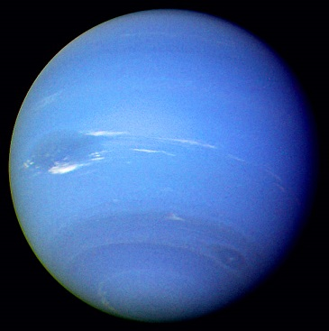
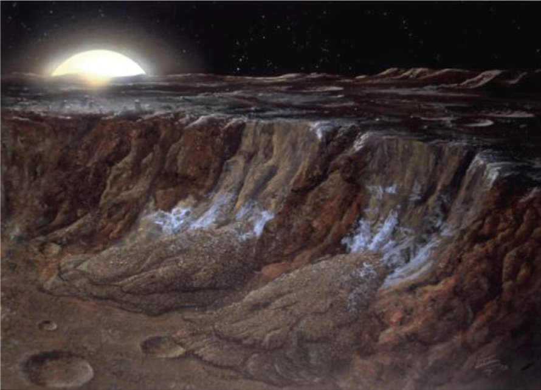
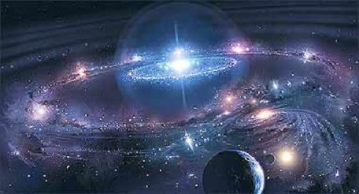
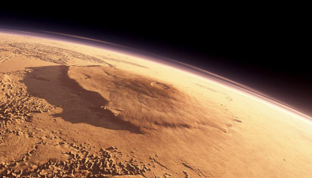
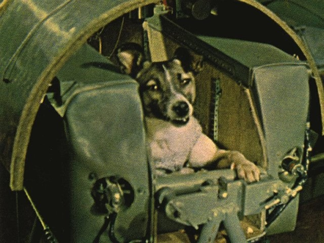
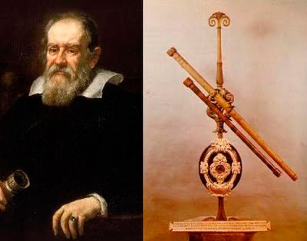
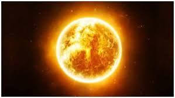
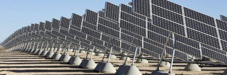
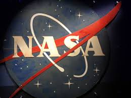

<!DOCTYPE html>
<html>

<head>
<title>Sistema Solar</title>
<meta charset = 'utf-8'>

</head>
<link rel= 'stylesheet' type='text/css' href='../css/estilos.css'>
</html>
<h1><body style = 'text-align:center;'><script>

/*
RAINBOW TEXT Script by Matt Hedgecoe (c) 2002
Featured on JavaScript Kit
For this script, visit http://www.javascriptkit.com
*/

// ********** cambia aquí

var text="Curiosidades" // tu texto
var speed=80 // velocidad de movimiento 


if (document.all||document.getElementById){
document.write('<span id="highlight">' + text + '</span>')
var storetext=document.getElementById? document.getElementById("highlight") : document.all.highlight
}
else
document.write(text)
var hex=new Array("00","14","28","3C","50","64","78","8C","A0","B4","C8","DC","F0")
var r=1
var g=1
var b=1
var seq=1
function changetext(){
rainbow="#"+hex[r]+hex[g]+hex[b]
storetext.style.color=rainbow
}
function change(){
if (seq==6){
b--
if (b==0)
seq=1
}
if (seq==5){
r++
if (r==12)
seq=6
}
if (seq==4){
g--
if (g==0)
seq=5
}
if (seq==3){
b++
if (b==12)
seq=4
}
if (seq==2){
r--
if (r==0)
seq=3
}
if (seq==1){
g++
if (g==12)
seq=2
}
changetext()
}
function starteffect(){
if (document.all||document.getElementById)
flash=setInterval("change()",speed)
}
starteffect()
</script></body></h1>

<h3>Neptuno</h3>
<h5 align="left">Un planeta gaseoso siempre suele ser cambiante y así lo indicó en su día la “Gran Mancha Oscura” que, del tamaño de la Tierra, se divisó hasta el año 1.994. Ese mismo año la marca desapareció y empezó a formarse otra lo que confirmó la presencia de grandes tempestades y vientos de velocidad no conocida en ningún otro lugar.</h5>
<div align="center"></div>
<h5 align="left">El tiempo necesario para ir a Neptuno desde la Tierra dependería del camino escogido y del momento en el que ambos planetas estuvieran de sus órbitas cuando la misión fuese lanzada. Por ejemplo, la nave espacial Voyager 2 fue lanzada el 20 de agosto de 1977 y llegó a Neptuno el 24 de agosto de 1989 (descubriendo seis de las ocho lunas que tiene y confirmando la existencia de anillos).</h5>
<h5 align="left">Es de color azul porque su atmósfera cuenta con un gas llamado metano. Este gas, bajo los rayos de Sol, absorbe los colores rojos y hace que la luz reflejada desde el mencionado sistema parezca azul. En ocasiones, se observan manchas oscuras que son tormentas violetas.</h5>
<h5 align="left">Se supone que, debajo de la atmósfera de hidrógeno y helio, se encuentra un manto líquido compuesto por estos elementos y varios hielos (agua, metano, amoníaco, etc.), seguido por un núcleo de hielo y roca. Se supone, pero nadie lo puede afirmar con certeza. Así pues, el manto de Neptuno podría estar repleto de diamantes gigantes.</h5>
<div align="center"></div>

<h3>Saturno</h3>
<h5 align="left">El nombre del planeta Saturno proviene del nombre del dios de la agricultura en la mitología romana, se dice que es el cronos de los griegos, también se dice que Saturno es el padre de Júpiter.</h5>
<h5 align="left">Saturno es un planeta realmente longevo, tiene 4,5 mil millones de años de existencia.</h5>
<h5 align="left">En Saturno hay luces y son las mismas que reflectan a la Tierra, se encuentran en el norte y en el sur de este planeta, se dice que esta iluminación es provocada por las llamadas auroras, unas partículas provenientes del sol.</h5>
<div align="center"></div>
<h5 align="left">En Titán, una de las lunas de Saturno, existen criovolcanes o lo que es lo mismo volcanes de hielo, muy diferente a lo que estamos acostumbrados a ver, en lugar de lava caliente, de estos volcanes emerge una sustancia gélida de compuestos volátiles, como agua, metano y amonio.</h5>
<h5 align="left">En el polo norte se localiza un hexágono gigante, un hallazgo extremadamente sorprendente, que puede cambiar de color a medida que avanza en el tiempo y logra vientos de más de 300 kilómetros por hora y sus lados tienen dimensiones mayores que el diámetro de nuestro planeta.</h5>

<h3>Mercurio</h3>
<h5 align="left">A pesar de ser el planeta más cercano al sol, en este pequeñín abunda el hielo. ¿Khé? Esto se debe a que hay una serie de cráteres que hacen que ciertas áreas nunca reciban la luz del Sol. Además, junto con Venus son los únicos planetas del sistema que no tienen ni lunas ni anillos.</h5>
<div align="center"></div>

<h3>Sistema Solar</h3>
<h5 align="left">El Sistema Solar tiene 4.568 millones de años y se encuentra a 28.000 años luz del centro de la Vía Láctea. Fueron los griegos los primeros en empezar a documentar información sobre el Sistema, afirmando que la Tierra era el centro del universo. No fue hasta Nicolás Copérnico, alrededor del año 1.500, hasta que se planteó el actual modelo. Galileo Galilei e Isaac Newton trabajaron sobre esa idea para dar forma a lo que hoy en día conocemos.</h5>
<div align="center"></div>

<h3>Marte</h3>
<h5 align="left">Marte, nuestro vecino rojo, tiene la montaña más alta de todos los planetas de nuestro Sistema. El Monte Olimpo, con una altitud de 23.000 metros, se ha coronado con la gran montaña. En otro tiempo fue un volcán escudo, que fue creciendo hasta detener las erupciones.</h5>
<div align="center"></div>

<h3>Astronomía</h3>
<h5 align="left">El cielo nocturno parece que tiene millones de estrellas visibles. Eso es porque vivimos en una galaxia que tiene cientos de millones de estrellas. Sin embargo, no podemos verlas a simple vista. Resulta que los cielos de la Tierra tienen, como mucho, alrededor de diez mil estrellas que se pueden ver a simple vista.</h5>
<h5 align="left">El observatorio astronómico más antiguo que aún se conserva es el observatorio de Cheomseongdae, en Kyongju, Corea del Sur, fue construido entre 632-647 y se utilizó para observar las estrellas y predecir el tiempo. Mide 9,17 m de altura X 5,35 m en la base.</h5>
<h5 align="left">El primer ser vivo que orbitó la Tierra fue la perrita Laika, que en ruso significa “que ladra”. Fue el 3 de noviembre de 1957 a bordo de la nave soviética Sputnik 2. Tras Laika, la URSS envió al espacio 12 perros, de los que sólo cinco llegaron vivos de vuelta a la Tierra.</h5>
<div align="center"></div>
<h5 align="left">El holandés Hans Lipershay intentó patentarlo, pero le fue denegado “por lo sencillo de copiar” que era un objeto así, lo que nos indica que, probablemente, ya existían telescopios por toda Europa, aunque ninguno adecuado para la astronomía. Hay indicios de que un artesano de Gerona llamado Joan Roget podría haber fabricado los primeros telescopios. Pero fue Galileo Galilei quien en 1609 fue el primero que apuntó al cielo, dando comienzo así a cuatrocientos años de descubrimientos sobre el cosmos.</h5>
<div align="center"></div>

<tr>
<td><div align="center"><a href = 'planetas.html'></a><figcaption style = 'text-align:center;color:blue;'>Los planetas</figcaption></div></td>
</tr>
<tr>
<td><div align="center"><a href = 'historia.html'></a><figcaption style = 'text-align:center;color:blue;'>Historia</figcaption></div></td>
</tr>
<tr>
<td><div align="center"><a href = 'astrologia.html'></a><figcaption style = 'text-align:center;color:blue;'>Astrología y astronomía</figcaption></div></td>
</tr>
<tr>
<td><div align="center"><a href = 'curiosidades.html'></a><figcaption style = 'text-align:center;color:blue;'>Curiosidades</figcaption></div></td>
</tr>
<tr>
<td><div align="center"><a href = 'unpocodehumor.html'></a><figcaption style = 'text-align:center;color:blue;'>Un poco de humor</figcaption></div></td>
</tr>

<tr>
<td><div align="center"><a href = 'sol.html'></a><figcaption style = 'text-align:center;color:blue;'>Sol</figcaption></div></td>
</tr>
<tr>
<td><div align="center"><a href = 'energia.html'></a><figcaption style = 'text-align:center;color:blue;'>Energía solar</figcaption></div></td>
</tr>
<tr>
<td><div align="center"><a href = 'formacion.html'></a><figcaption style = 'text-align:center;color:blue;'>Formación del sistema solar</figcaption></div></td>
</tr>
<tr>
<td><div align="center"><a href ='nasa.html'></a><figcaption style = 'text-align:center;color:blue;'>Nasa</figcaption></div></td>
<body>


